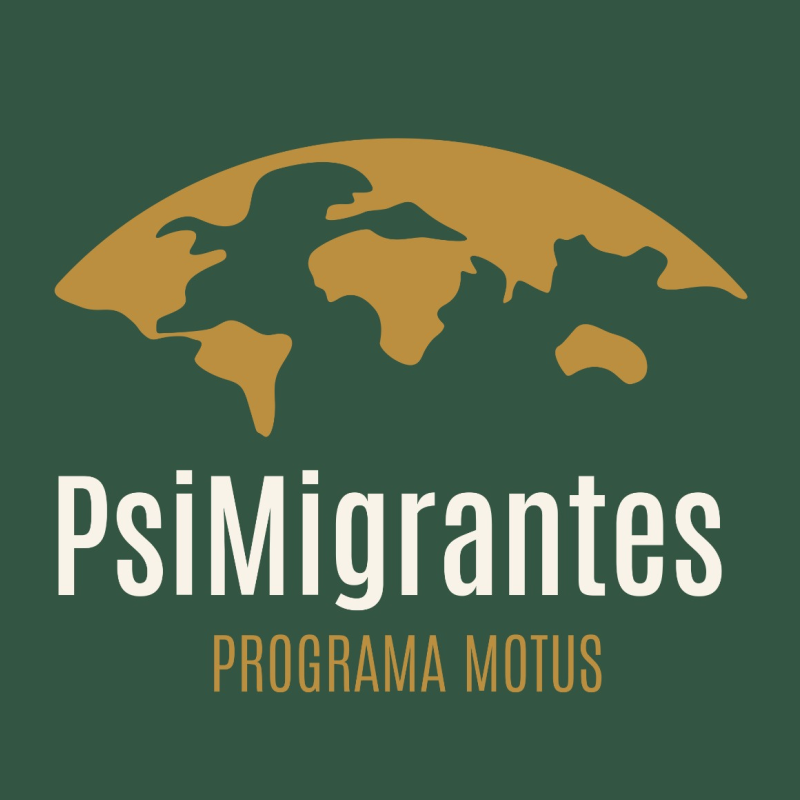
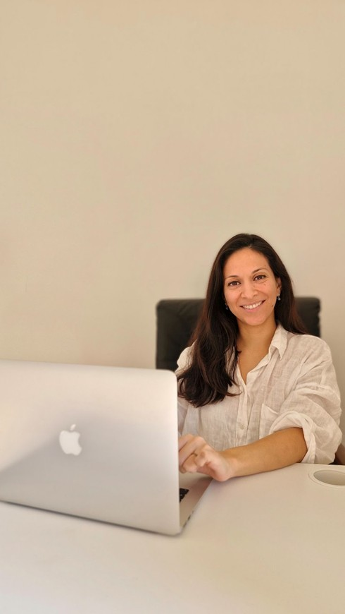
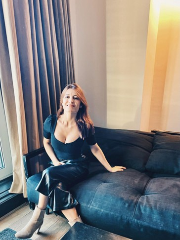
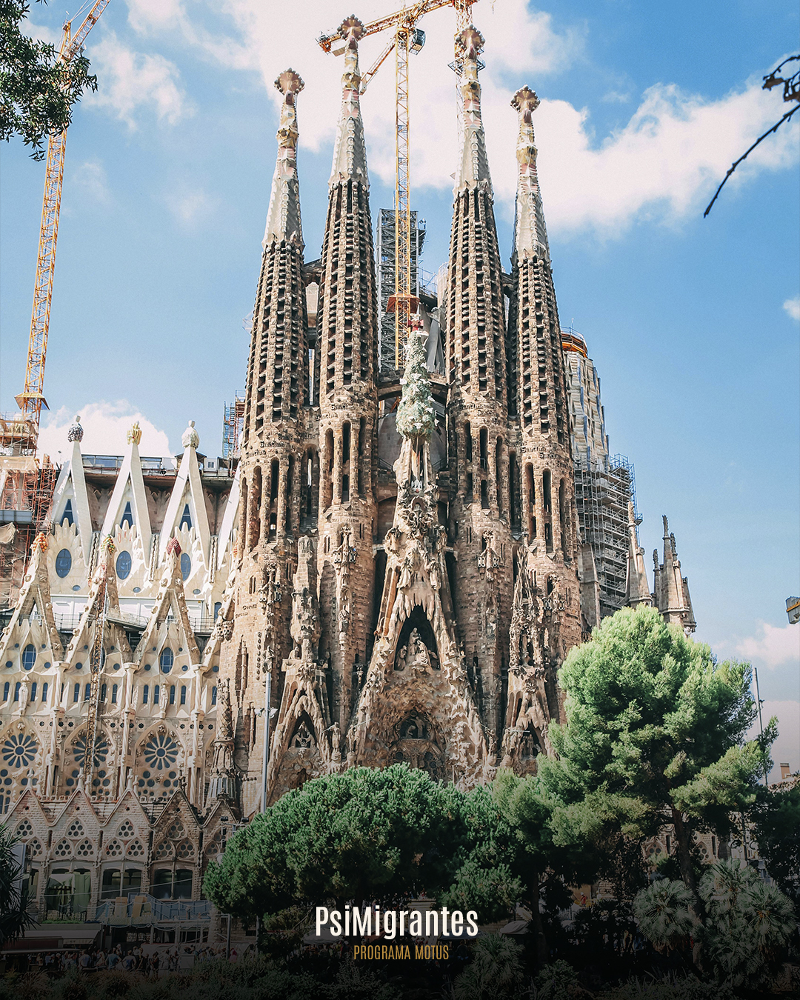
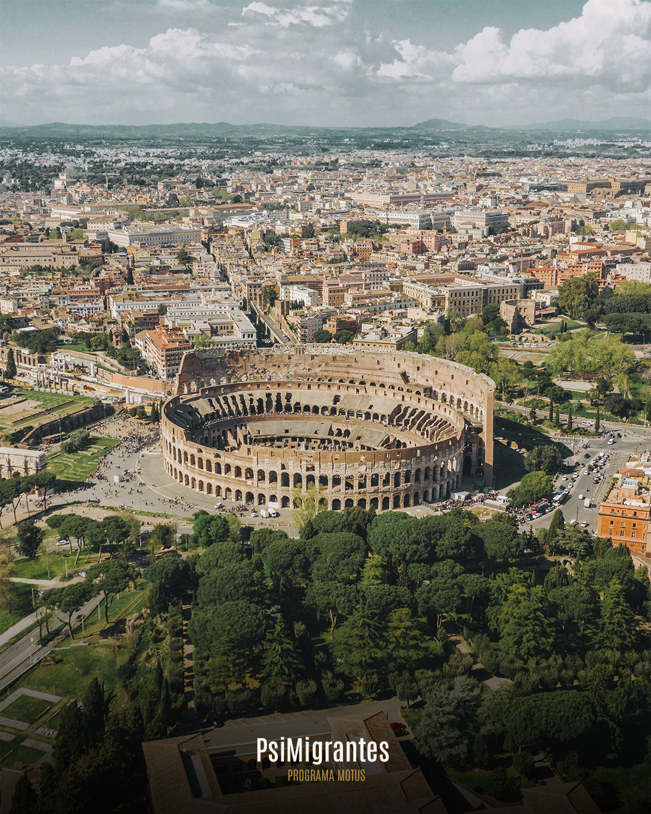

El Programa Motus es un acompañamiento integral para personas que migran voluntariamente y desean construir un proyecto de vida sólido en su nuevo país.
El programa combina orientación práctica —documentación, vivienda y empleo— con un enfoque clínico y personalizado que contempla el impacto emocional de la migración. A través de cinco módulos, Motus promueve una adaptación consciente, saludable y orientada al bienestar, con un rol activo del migrante en su propio proceso.
Motus acompaña la integración personal, social y laboral, facilitando la construcción de una vida estable y significativa en el nuevo destino.
Asesoría laboral para personas migrantes que buscan posicionarse estratégicamente en el mercado laboral de un nuevo país. Acompañamos de manera personalizada durante 8 semanas, en un proceso diseñado para traducir la experiencia profesional al contexto local, definir un posicionamiento diferencial y construir una propuesta de valor sólida y competitiva. Optimizamos CV, LinkedIn y discurso profesional, y desarrollamos una estrategia de búsqueda y networking alineada con los objetivos, el perfil y la realidad del mercado destino. Un servicio exclusivo, integral y orientado a resultados, liderado por un equipo especializado en migración, carrera profesional y empleabilidad.
Asesoría legal para personas migrantes que buscan definir una vía migratoria clara, segura y alineada con su proyecto personal y profesional. Acompañamos de manera personalizada, durante 4 u 8 semanas, en un proceso estratégico orientado a analizar cada caso en profundidad, identificar las opciones legales viables y construir una hoja de ruta migratoria estructurada. Asistimos en la preparación y revisión de la documentación, el orden adecuado de los trámites y el seguimiento del proceso, incluyendo los primeros pasos de regularización en el país destino. Un servicio integral, riguroso y orientado a decisiones informadas, respaldado por un equipo de profesionales con amplia experiencia en migración y asesoría legal.
Asesoría familiar para personas migrantes que buscan acompañamiento profesional durante el proceso migratorio. Guiamos de manera personalizada, durante 4 u 8 semanas, con sesiones individuales y familiares, diseñando un plan claro para evaluar la situación emocional de la familia, establecer objetivos específicos y fortalecer a madres y padres con herramientas prácticas para apoyar a sus hijos. Analizamos la dinámica familiar y el impacto de la migración en cada miembro, elaboramos un diagnóstico claro y compartido, y definimos un plan de acompañamiento estructurado y adaptado a la edad y necesidades de los hijos. Proveemos estrategias concretas para contención emocional, rutinas, adaptación escolar y social, manejo de emociones y comunicación efectiva dentro del núcleo familiar. Un servicio integral, cercano y orientado a resultados, respaldado por un equipo de profesionales de la salud.



